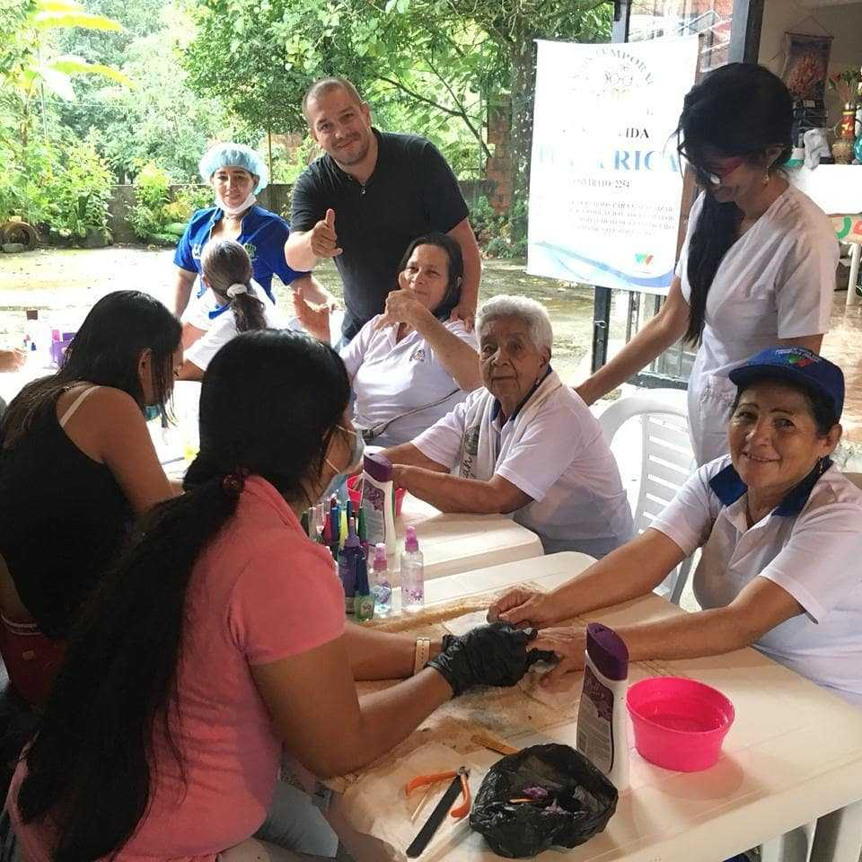

<ion-toolbar color="primary">
  <div class="iconoregresar" style="font-size: 30px; margin-top: 12px;">
    <ion-icon  name="chevron-back-outline"[routerLink]="[ '/nuevo-menu' ]"></ion-icon>
  </div>
  <ion-title class="titulo">Terezita Corazón</ion-title>
</ion-toolbar>

<ion-content>
  <ion-slides size="12" [options]="option"  class="ion-margin-top">
    <ion-slide>
      <ion-card>
        
      </ion-card>
    </ion-slide>

    <ion-slide>
      <ion-card>
       <a routerLink="/">  </a>
      </ion-card>
    </ion-slide>

    <ion-slide>
      <ion-card>
        
      </ion-card>
    </ion-slide>
  </ion-slides>

 
  <div *ngFor="let item of informacion; index as i " >
    <ion-card  *ngIf="item.titulo ==='FUNDACIÓN TERESITA CORAZÓN'" class="tamañocard">
      <ion-card-header>
        <ion-card-title >{{item.titulo}}</ion-card-title>
      </ion-card-header>
    
      <ion-card-content style="text-align: justify;">
        {{item.descripcion}}
      </ion-card-content>

      <div class="factura">
        <ion-button color="primary">Factura</ion-button>
      </div>

    </ion-card>
  </div>

</ion-content>
